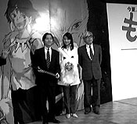
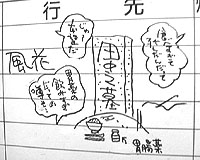
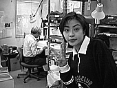

<html>
<head><meta http-equiv="Content-Type" content="text/html; charset=UTF-8">
<script>
  (function(i,s,o,g,r,a,m){i['GoogleAnalyticsObject']=r;i[r]=i[r]||function(){
  (i[r].q=i[r].q||[]).push(arguments)},i[r].l=1*new Date();a=s.createElement(o),
  m=s.getElementsByTagName(o)[0];a.async=1;a.src=g;m.parentNode.insertBefore(a,m)
  })(window,document,'script','https://www.google-analytics.com/analytics.js','ga');
  ga('create', 'UA-143959-3', 'auto');
  ga('require', 'linkid', 'linkid.js');
  ga('require', 'displayfeatures');
  ga('send', 'pageview');
</script>
<title>1997年3月 - 映画『もののけ姫』制作日誌</title>
</head>
<body bgcolor="#ffffff" link="#336699" vlink="#336699">


<font size=5 color=Blue >制作日誌　1997年3月</font><br>
<p>
<br>
<p>
97.3.1（土）<br>
　ラッシュチェックあり。作画追加や特効直し、色パカ等リテーク多数あり。<br>
　昨年から毎週土曜日に整体の先生に来てもらって、１日５、６人治療してもらっているが、宮崎監督、鈴木プロデューサーを筆頭に、仕事があまりに忙しい人が多いため、多少元気になっても、数日でもとのだるい身体に戻ってしまうそうな。<br>
<p>
97.3.2（日）<br>
　森友さんらがおでんを作り、夕方スタッフに配布。<br>
　原画の手持ちが終わる人がぼちぼち出始めたため、宮崎監督と残り原画について割り振りを話し合う。結果、外で手伝ってもらっているＩ氏の原画が終わりそうにないので、賀川さんが手持ちを終了させた時点で手伝いに入ってもらう。そしてその他の原画マンについては、手持ちが終了した時点で、危機的状況にある動画の手伝いに入ってもらうことにする。<br>
<p>
97.3.3（月）<br>
　仕上げの残り枚数を計算するも、１月末に予想した枚数よりも遥かに増えている。特に、デイダラボッチが出てくるだけで、マスク等で他の動画上がりの枚数の２倍以上になってしまうのだ。<br>
　フランスのおたく王デイビッド君が持っている秘密のビデオを10分程見る。それはイギリスのアニメーター、リ○○○○・○○○○○スがこつこつと何年もかけて作っている新作長編作品のライカリールビデオ。凄い。<br>
<p>
97.3.4（火）<br>
　原画の上がっていないCUTを絵コンテを見ながら、枚数を予測し、総枚数を出してみたところ、予想をかなり超える枚数になってしまった。明日保田さんに報告するのが恐ろしい。<br>
　ＭＩＴスタジオにて、甲六役の西村○彦氏、エボシ役の田○裕子さん等のアフレコがある。西村さんの第一印象は、思っていたより背がずいぶん高く、とても気さくな人だなあということ。隣に座った演助の伊藤氏と親しく話をしていた。しかし、アフレコに入ると表情は一転、それまで西村さんの声をあまり聞いたことが無かった宮崎監督でしたが、声を聞いた途端「うーん」と唸り「素晴らしい」と一言。「普通の役者がやっていたらただの平凡な人に終わっていた甲六が、独自のキャラクターを持った」とその演技力を絶賛。アフレコ中にも西村さんの迫真の演技と、甲六のコミカルなキャラクターが見事にマッチして思わず笑い声が上がる場面が何度もあった。一方田○さんは２回目ということもあり落ち着いたもの。例えて言うなら動の西村、静の田○と言ったところでしょうか。文句の付けようもなく順調にアフレコは進行したのでした。<br>
　杉野さんの原画が予想よりかなり早く上がりそうなため、遠藤さんのCUTを２CUT程分ける。<br>
<p>
97.3.5（水）<br>
　外注で動画２人ＩＮ。そのうちの一人、先日TELのあった動画希望のアニメーターが来社。打ち合わせの後、社内見学。因みに実に礼儀正しい若者であった。<br>
　高畑監督出社。相変わらず元気そう。久しぶりの出社の為、喋りまくっている。退社したはずの野崎氏による「母をたずねて三千里」ＬＤボックス用のインタビューが行われる。<br>
　契約で社内で原画を描いているスタッフに、引き続き動画を手伝って欲しい、とお願いする。<br>
<p>
97.3.6（木）<br>
　宮崎監督が出社と同時に鍼へ行ってしまう。<br>
　昨日、「また明日」と言って帰って行った高畑監督は夕方６時になっても出社せず。結局来たのは６時半。<br>
　Ｄ１パートとＤ２パートの区切りをCUT1,317にすることに。<br>
　今日午後から野中さんが公団の補欠申込に行ってきたが、午前中に当選が決まった人が、すでに申し込みに来ていて、受付の人に「ちょっと難しいですね」と言われたそうな。しかしまだ野中さんは「契約日は19日のはず。その間に気が変わるかも」とはかない夢に望みを託している。<br>
<p>
97.3.7（金）<br>
　遅刻常習犯Ｅ氏が１時になっても出社しないため、何時も食事を一緒にしているＫ氏が、Ｅ氏の机の上に宮崎監督を真似て「いいかげんにしろ！　もう来るな！！」と貼紙をした。出社してきたＥ氏はそれを見て顔面真っ青。真相を聞かされて床にへたり込んでいた。<br>
　Ｃパートのカッティングを前に黒田さんが最後の背景に苦戦している。一応動撮はしてあるが、なんとか間に合って欲しいもの。<br>
　予想枚数が増えたため、倉庫に予備のセルを取りに行く。多めに買っておいて良かった。<br>
　稲村氏手持ち終了。<br>
<p>
97.3.8（土）<br>
　ラッシュチェックあり。<br>
　浦谷さんの取材が入る。今日は動画作業を集中的に追いかける。<br>
　山森氏手持ち終了、動画IN。<br>
　コミックボックス才谷氏来社。相変わらず服装がきたない。<br>
　高畑監督、今日は４時頃に出社。<br>
<p>
97.3.9（日）<br>
　ＣＧ部片塰さんがエヴァンゲリオンに狂っている。昨日まで放送されていたテレビの再放送ではまったらしい。途中で放送が待ち切れず友人にビデオを借りていたとか。<br>
　休日の作画スタッフの出社時間が遅くなってきている。さすがにずっと休み無しでは辛いか。<br>
<p>
97.3.10（月）<br>
　赤坂プリンスで製作発表。それに加えて望月さんが忌引の為製作業務部が一人もいない。朝の電話攻勢に対処しなければ、と思ったらいつも電話をかけてくる人達がみんな製作発表に行っている為、静かなもの。<br>
　以前男鹿さんからCGの絡むCUT1,465付近のレイアウトを催促されていたが、CG部からも「早くしてくれ、間に合わん」と急かされる。早速宮崎監督に再度催促。<br>
　高畑さんが毎日制作、出版部横のスチール机に出勤しているが、老眼鏡をかけながら周りの人に「そんなことも分からないんですか」と議論を仕掛けている。<br>
　原画チェックに詰まった宮崎監督が、制作部に来ては高畑監督と「宮沢賢治は…」と議論をしたり「パクさんがそこに座っていると、ここがどっかの町役場に見えるな」とからかったりして気晴らしをしている。<br>
<p>
<center>
<br>
<font size=1>赤坂プリンスでの製作発表記者会見</font>
</center>
<p>
97.3.11（火）<br>
　Ｃパート最後の背景を、昨日から黒田さんが徹夜で描き、昼頃に上げる。すぐさま撮影し、４時にイマジカへラボ入れ。<br>
　朝から、テレビ信州、山形放送、中京テレビ、福岡テレビ、札幌テレビの合同取材が行われる。各テレビ局が順番に社内をぐるぐる。<br>
　札幌テレビの道産子紹介のコーナーで、山田君と二人でインタビューに答える。「カメラのご両親に向かってどうぞ」だって。ハズカシー。<br>
　Ｃパートつなぎ込みの為、ラッシュを瀬山編集へ持っていく。<br>
　演助の有富氏が寝違えて、時間が経つにつれ首が回らなくなる。夕方に制作の車で病院送り。<br>
<p>
97.3.12（水）<br>
　ラッシュが行われる。<br>
　瀬山さん来社。Ｃパートのカッティング。上がったラッシュはすぐにオムニバスへ。ＳＥ打ち合わせは14日。<br>
　例のＣＧCUTのレイアウトを含め、「もののけ姫」全てのレイアウトが上がる。<br>
　有富氏の首はますます悪化。人間フォークリフトと呼ばれている。<br>
<p>
97.3.13（木）<br>
　Ｄ１パートのカッティングを、当初の28日から瀬山さんにむりしてもらって27日に繰り上げる。
　原画を手伝ってくれていたＩさんが手持ち終了。<br>
　Ｄ１パートのカッティングに向け、各美術に催促。仕上げもきびしい状況のため、色見本となるボード作業とのバランスが難しい。<br>
　最近すっかり胃がおかしくなっている私だが、宮崎監督は「食うことに生きがいを感じていたのに、胃がおかしくなったらアイデンティティの崩壊だ」とやけに楽しそう。鈴木プロデューサーはホワイトボードに「食いすぎで死んだ田中の墓」の絵を描いて喜んでいるし…。これってイジメ？<br>
<p>
<center>
<br>
<font size=1>鈴木プロデューサーの描いた田中さんの墓</font>
</center>
<p>
97.3.14（金）<br>
　効果の伊藤さん、若林さんと宮崎監督とで先日カッティングが終了したＣパートのＳＥ打ち合わせ。<br>
　清水氏手持ち原画終了。原画が残り40CUTを割る。<br>
<p>
97.3.15（土）<br>
　三原氏原画作業終了。九州一周自転車旅行に出発するとか。<br>
　手持ちを終了させ、他の原画マンの手伝いに入っていた粟田氏だが、それも終わってしまいそうなので、再度手伝いで２CUT追加をお願い。<br>
　徐々に原画マンが手持ちを終了するにしたがい、空き机が出てきた。社内で作業をした方が能率が上がりそうな外注の動画マンをリストアップ。<br>
　うわさの「のなかくん」人形をスキャナーで取り込んでみた。なかなか本人の特徴をとらえていると思うが……　次は「よねちゃん」人形か!?　ちなみにデザインは鈴木プロデューサーである。<br>
<CENTER>
<br>
<font size=1>うわさの「のなかくん」</font>
</center>
<p>
97.3.16（日）<br>
　久しぶりに宮崎監督がお休み。<br>
　原画賀川さん、大谷さんが手持ち終了。動画のお手伝いへ。<br>
<p>
97.3.17（月）<br>
　調子が悪かったマックのキーボードを取り替える。打った文字が確実にモニターへ表示される快感。日誌を書くときのストレスが激減。<br>
　今日も高畑監督が来ない…。<br>
　CUT1097の背景動画のCUTが上がってきたが、だんだんデジタルの背景処理に目が慣れてきたメインスタッフにとっては、背景動画がどうもいまいちの処理に見えてきたらしくリテーク。宮崎監督は「昔は背景動画はぜいたくな手法だったのに…」とこぼしていたが、結局デジタルで少し処理を加えることに。<br>
<p>
97.3.18（火）<br>
　テレコム竹内氏、山路氏が来社。今後の事について話し合う。映画後半は重たいCUTが多く「いつもの作品のように上がらなくてすみません」と山路氏は恐縮するが、あれだけ大変なCUTを社内の何倍かのスピードで上げてくれるテレコム動画スタッフに、私は地面に頭をすりつけて感謝したい気分である。<br>
　昼食を取りに東小金井南口へ行こうと駅の改札前を通りかかったら、パンツ一丁の男が正座をして、警官の職務質問を受けていた。天気が良いと怪しい奴が出没する。<br>
　午後５時頃「進め！電波少年」のスタッフが「宮崎監督はこの作品を最後に本当に引退するのか」を確かめたいと突如来社する。松本明子嬢が宮崎監督に質問し、監督は「そのつもり」と答えたらしい。因みにそのついでに「もののけ姫」で声の出演をしたい、とお願いもしていたが、結局どうなったかは不明。しかし、本当にアポ無しでくるのね。<br>
<p>
<center>
<table><tr><td>
<br>
<font size=1>後ろで机に向かっているのは宮崎監督です</font>
</td></tr></table>
</center>
<p>
　芳尾氏手持ち終了。そこで宮崎監督が、遅々として進まないＫ氏の手持ち３CUTのうちから、２CUTを回収し芳尾氏にまわす。<br>
<p>
97.3.19（水）<br>
　背景を手伝ってもらっている谷口氏に優先CUTの催促。3CUT上がっているとの事なので回収。<br>
　CG部で男鹿さんと宮崎監督が最後のシーンのCGCUTの打ち合わせ。<br>
　鈴木プロデューサーから最終スケジュールを計算せよ、との指令。<br>
<p>
97.3.20（木）<br>
　D1パート最後の、笹木氏の原画が上がる。宮崎監督にチェックを優先してもらうよう要望。笹木氏は動画へ。<br>
　3時に宮崎監督からおはぎが、近藤喜文氏からシュークリームが（本当はおはぎに合わせて和風に団子を買おうと思っていたらしいのだが、いつもの団子屋が休みだった為シュークリームとなる）全スタッフに配られる。<br>
　外で手伝っていただいたＴ氏、手持ち終了。<br>
<p>
97.3.21（金）<br>
　粟田氏が手持ち終了。<br>
　Ｄ１パートカッティングに向け線撮りが最高潮を向かえる。Ｄ２パートはもっと凄いことになりそう。<br>
　鈴木プロデューサーと最後の追い込みについての打ち合わせ。<br>
<p>
97.3.22（土）<br>
　テレビマンユニオンの取材陣が来社。今日はベーカムにステディカムを付けて取材。<br>
　作画スタッフを会議室に集めて現在の状況説明と今後アップに向けての心構え等を話す。とにかく日常生活を犠牲にして上げていくしかないのだ。最後の１カ月間死ぬ気で頑張ろう。やっぱり精神主義になってしまうなぁ。<br>
　ある動画スタッフがゴミステーションで、「拾ってください。病気は持っていません。いいかめです」と書いてガラスケースに入れて捨てられているカメを発見。かわいそうなので拾ってきて引き取り手を探したところ、宮崎監督が名乗りを上げる。早速「亀次郎」と命名。<br>
<p>
97.3.23（日）<br>
　宮崎監督が今日も徒歩で通勤しようとしたが、時間がかかりすぎたため途中でタクシーを拾ったという。最初は滝山団地付近でタクシーに乗ろうと考えたが、なかなかつかまらなかったため、結局花小金井の付近まで歩いてきてしまったらしい。<br>
　宮崎監督が昨日拾った亀次郎を持ち帰り、早速自宅の池に放したそうだ。<br>
<p>
97.3.24（月）<br>
　二木さんが手持ち終了、動画の手伝いに。<br>
　特効村上さんに仕事出し。<br>
　毎日新聞の論説委員だった動画の野口さんのお父さんが死去する。<br>
　6時過ぎ、ヘール・ボップ彗星が見えるとの情報に、急いで屋上に行く。北西の空に、周りに靄のかかったような白い星が見える。双眼鏡を貸してもらい、見てみると確かに白い尾をひいている。しかし、肉眼でも見えるなんて本当に感動ものだ。<br>
　今日はマル秘事項が多くて少ない日誌である。<br>
<p>
97.3.25（火）<br>
　朝９時頃、畑をはさんだジブリ北側の家が火事。屋根から炎を吹き上げ、ものすごい火力である。しかし、すぐに消防車が駆け付け消火活動が行われ約15分後には鎮火する。自分の作業がなかなか進まない宮崎監督は「ジブリも燃えてしまえば良かったのに」と一言。<br>
　外注として動画を手伝っていた山田さんが社内で作業を行うために来社。じゃない今日から出社か。４月１日からは同じく動画の川田氏が社内で作業を行うことに。<br>
　最近仕上げで風邪が流行している。保田さんも今日は早退。<br>
<p>
97.3.26（水）<br>
　中央線が国立付近の火事で９時半頃から11時すぎまでストップ。おかげで多くのスタッフが途中で足止めを食らう。総武線が動いていたため、三鷹駅から歩いてきた人もいた。<br>
　テレコムに仕上げ入れ。<br>
　明日のカッティングに向け、イマジカを何度か往復。夕方上がりの分を夜８時からラッシュチェック。残りは11時上げ、明日朝のラッシュ。<br>
　いろいろ問題が起こり、11時上げのときに再度撮り直したものをイマジカに入れ、明日のカッティング中に回収することになるが、撮るのに思いの外時間がかかり、イマジカに出発したのは12時すぎ。<br>
<p>
97.3.27（木）<br>
　D1パートのカッティングが行われる。土曜日からのアフレコに向け、「線撮り部分を解説しとかないとアフレコがしづらいな」との宮崎監督の危惧から、つながった時点で若林さんにも来てもらう。<br>
　２時より鈴木プロデューサー、保田さん、舘野さんらの緊急スケジュール会議。<br>
<p>
97.3.28（金）<br>
　D1パートの社内ラッシュと英語版プロモーションフィルム35mm上映会を行う。その際毎年恒例となった花見弁当と団子の配布がある。小金井公園あたりで花見をしながら食べるのが本当であるが、だいたいこの時期は忙しくて花見に行く暇が取れないのであった。<br>
　社内の動画マンを一人づつ呼んで４月30日の最終アップに向け手持ちをいつまでに上げて、あと何枚をできるのかを聞いていく。<br>
<p>
97.3.29（土）<br>
　スタジオキリーの岩切氏来社。これから追い込みに向けてなんとか一枚でも多くやって欲しい、と泣きつく。<br>
　制作のアルバイトの面接。4月1日から鈴木健一郎君が来てくれることに。<br>
　MITスタジオにてCD1パートのアフレコが行われる。<br>
<p>
97.3.30（日）<br>
　今日は本当に久しぶりにスタジオ全体がお休み。ただMITスタジオではアフレコが行われる。今日は名古屋章氏等。<br>
<p>
97.3.31（月）<br>
　今日もアフレコが行われる。石田ゆり子、西村雅彦両氏。<br>
　宮崎監督が1時から行われるアフレコに、会社を朝9時前に出発したため、朝の短い時間を使って打ち合わせをしようとしていた保田さんの色指定がストップ。もっとも動画が順調に上がっていないから山積みになることはないけど…。<br>
　先週末から助っ人動画マンをぞくぞくと投入。動画アップまであと１カ月だ。<br>
<p>
<table border align="right"><tr><td><a href="974.html">次のページへ</a></td></tr></table><br>
<p><br>
<hr>
<p>
<table border align=right><tr><td>
<a href="./diary.html">日誌索引へ戻る</a>
</td></tr></table>
<br>
<br>
<table border align=right><tr><td>
<a href="./">「もののけ姫」トップページへ戻る</a>
</td></tr></table>

</body>
</html>